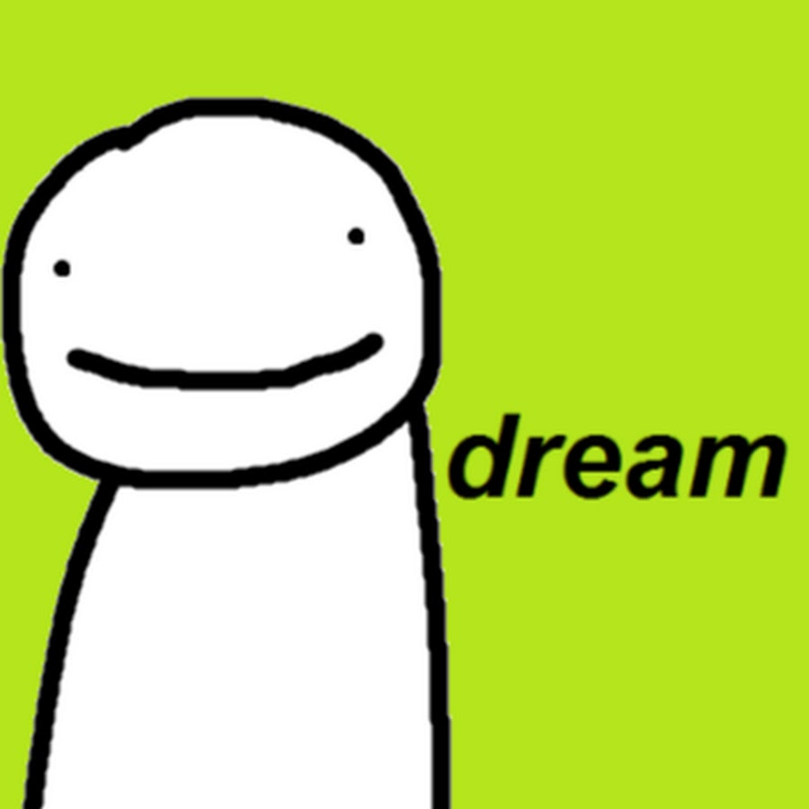

What is the Dream SMP?
The Dream SMP (formerly known as the Dream Team SMP), is a private, whitelisted survival multiplayer (SMP) server played on by the Dream Team and their friends. It is famous for being a roleplay server with an engaging plot and a long history of alliances, factions, eras, and characters.
That includes Minecraft, part game and part digital sandbox. It’s like if the imagined dramas kids invented around their Lego sets were manifest and infinitely malleable. Blocks and blocks of colored terrain form perfect replicas of the Spirited Away universe or Game of Thrones’ King’s Landing. Building is the base skill, but there is also a Survival mode, in which players can collect items, craft tools, and fight creatures or each other.
Dream SMP is just that: The player Dream’s survival multiplayer server, where top Minecraft celebrities have constructed an ongoing, mostly improvised narrative over dozens of combined hours of livestreaming. On Twitch, the participants separately go live on their own channels to further the fictional drama through their unique perspectives for their millions of subscribers. Their fans have assembled Thucydidean wikis describing each and every conflict: the BT period (Before TommyInnit), the controversial election between the So We Are Gamers (SWAG2020) and Politicians of Gaming (POG2020) parties, the Second Pet War, right on to Doomsday.
Dream SMP has a small and exclusive writers room. It’s on Discord. The personalities making up the storyline meet secretly in voice channels to sketch out general plot points: an election, maybe, or a new building. Written declarations of war (“Sometimes you just gotta kill some people sometimes yaknow - Sun Tzu”) or military strategies.
“Stories are usually told in a more traditional way in television, movies, and musicals. What happens here is unique,” says Dream SMP’s Quackity. “To a lot of people, Minecraft is a game where people mine and gather resources. We’ve legitimized the fact that we can tell very interesting stories through video games.”